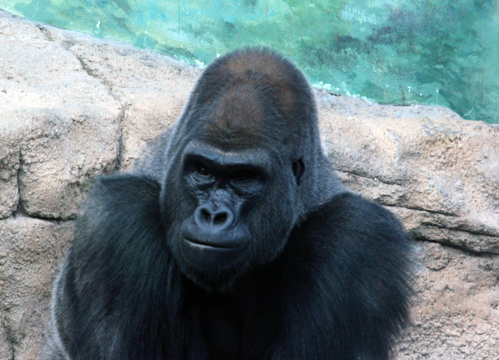

Discussion
Unit 8
Learning outcomes
By the end of this unit you should:
- understand the purpose and common features of discussion sections
Activity 1
Work in pairs or small groups. Ask and answer these questions to each other. Discuss in English if possible.
| # | Question | Yes | Um.. | No |
|---|---|---|---|---|
| 1 | Can your research be applied to a different area? | 5 | 3 | 0 |
| 2 | Can you explain your results? | 5 | 3 | 0 |
| 3 | Are your results similar to previous research projects? In what ways? | 5 | 3 | 0 |
| 4 | Are your results different to previous research projects? In what ways? | 5 | 3 | 0 |
Calculate your score.
If you scored 20, you probably have enough infomation to write your discussion. If you scored zero, it will be extremely difficult to begin writing.
Activity 2
Read this section to understand the purpose, structure and common features in discussion sections. Your professor may set you questions to check your understanding.
The discussion section addresses the question "so what?" and results are interpretted.
PurposeThe primary purpose of the discussion section is to interpret the results. There are four common ways to interpret results, namely:
- generalization, e.g. applying the results to other situations
- explanation, e.g. providing reasons for the results
- comparison, e.g. identifying similarities between the results found and previous research.
- contrast, e.g. identifying differences between the results found and previous research.
The results are discussed in the most logical way. In general, aim to put the most important part first. Three common ways to organize discussion sections are:
- integrated - For complex research projects, it may be easier for the reader to integrate the descriptive and interpretive data into one section. This avoids the need to refer back to results already mentioned in a separate section.
- thematic grouping - For example, the results could be divided into three groups A, B and C. The discussion could then be organised into three themes (A, B and C).
- chronological - Use this way if you feel that readers would be able to understand that data more easily if written that way.
Language features that are found in discussion sections include:
- approximation - The exact figures are usually mentioned in the results so rather than saying 69%, use two-thirds or slightly less than 70%.
- reference to visuals - Visuals need to be described and readers referrred to the visual. This is best achieved by numbering each visual, e.g. Fig. 1 shows the likely effect of XXXX.
- comparison - When comparing your project results to previous results, you could use phrases like: ... is more XXX than....
- contrast - When constracting your project results with previous results, you could use linking words like: However and but.
- modality - Avoid making claims that are too certain.
When interpretting results, it is necessary to avoid making claims that can be proved incorrect. If you are not certain about a claim, you need to show your uncertainty using modality (i.e. showing readers that your claim is actually a guess). The common ways to show modality are by using:
- modal verbs, such as can, may, might and could
- modal adverbs, such as probably and possibly
- modal adjectives, such as likely and unlikely
- modal nouns, such as probability, possibility and assumption
- hedging verbs, such as suggest, indicate and imply
Some examples of sentences showing modality are given below:
- This may be due to the fact that…
- This is probably due to the…
- One reason could be…
- It is likely that…
- Data gathered from the experiments indicated that…
- This would seem to suggest that…
- There is a strong probability that…
Activity 3
Read this discussion section. This extract is taken from a research article investigating the behaviour of gorillas in zoos. Identify the interpretations.
The findings from this study suggest that captive gorillas, like humans and other primates, may be influenced by their auditory environment, albeit to a moderate degree. There was no evidence of a statistically significant effect of auditory stimulation on any of the gorillas’ behaviours. Nonetheless, there was a pronounced trend for the animals to spend more time displaying behaviours indicative of relaxation (resting, sitting, socialising), and less time showing behaviours typically associated with stress (e.g. aggression, abnormal behaviour), during the experimental conditions than the control.
Somewhat surprisingly, the ecologically non-relevant sounds (i.e. classical music) appeared slightly (although not significantly) more beneficial to the gorillas than the ecologically relevant sounds. Indeed, over 50% less aggression and 30% less abnormal behaviour was noted in the ecologically non-relevant condition compared to the control.
Research suggests that classical music may have a beneficial effect on the psychological well-being of humans and other animals, resulting in diminished agitation, improved mood and lower levels of stress [1,2,3,4]. Quite surprisingly, the gorillas in this investigation reacted with a brief (< 15 min) fear response when first presented with the sounds from the rainforest, running outside and having to be coaxed indoors by staff.
This highlights how erroneous it is to assume that ecologically relevant forms of stimulation are automatically enriching. Interestingly, Ogden et al. [5] found that two zoo-housed adult (although not infant) gorillas responded to rain forest sounds with increased agitation, again raising concerns over the welfare implications of this particular auditory cue.
One must question the mechanism by which auditory stimulation may exert its behavioural effects on captive animals. It is possible that it simply serves as a ‘mask’, buffering the animals from the noise of visitors and other negative acoustical stimuli.
Alternatively, it may be the case that there is something specific and enriching about certain types of auditory stimulation. For instance, whilst still not conclusive, there is some evidence that Mozart’s Sonata K. 448 may promote cognitive functioning in animals and humans [e.g. 6,7]. The classical music used in this study encouraged slightly (although not significantly) less aggression and abnormal behaviour than the sounds from the rainforest, perhaps reflecting a greater degree of enrichment from the former type of acoustic stimulus. Further work is needed to unravel the specific acoustic elements that animals respond to and determine whether they serve as a mask to extraneous noise or exert an enriching neurophysiological effect.
(Wells, Coleman & Challis, 2006, pp. 330-1)Writing activity
Activity 4
Draft your discussion.
Unit review
Answer these questions.
- Can you name four ways to interpret results?
- Can you name three ways to structure the discussion section
- Can you name five common language features?
Answer these questions about your method section.
- Can you start your discussion section yet?
- Have you started?
- If not, when will you start?
Motivate me
“Relax.” – University drop-out
“Write. Then, relax. In that order.” – University graduate